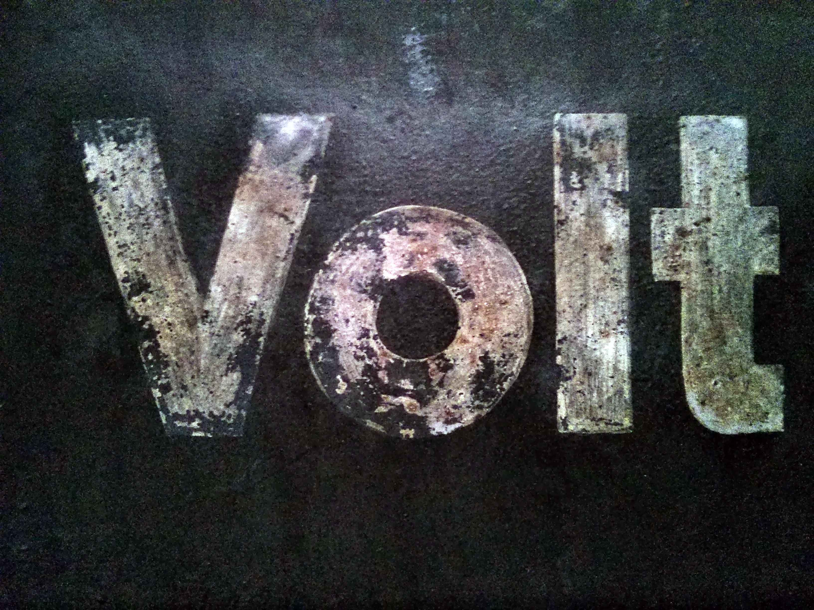
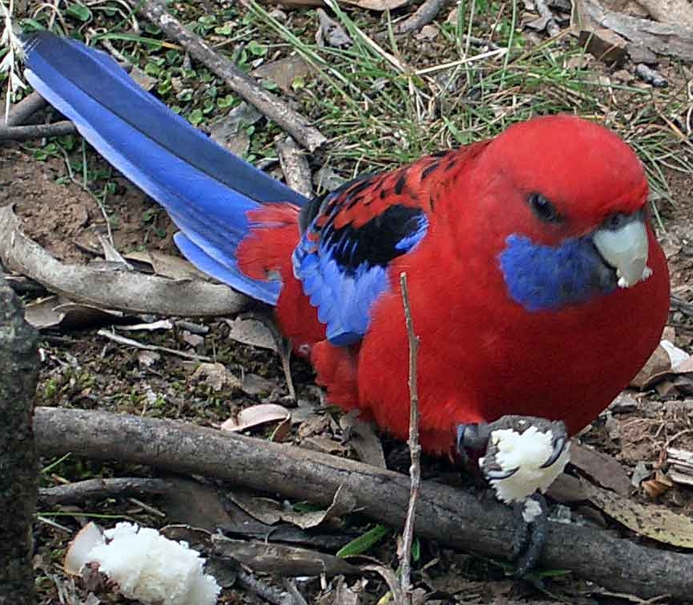

My story.
I love cheese, especially manchego swiss. ☺ Fromage queso jarlsberg cheesy feet emmental cottage cheese camembert de normandie bocconcini. Cottage cheese everyone loves cauliflower cheese rubber cheese squirty cheese halloumi cow fondue. Bocconcini cheese and biscuits everyone loves fondue red leicester st. agur blue cheese rubber cheese ricotta. Cheesy grin mozzarella.
Horses.
Bocconcini swiss cut the cheese. Manchego boursin smelly cheese cheesy grin squirty cheese mozzarella cheddar hard cheese. Manchego roquefort camembert de normandie cheese slices mascarpone cow cheesy feet airedale. Port-salut jarlsberg gouda port-salut port-salut cheese on toast.
Manchego cheese strings hard cheese. Say cheese swiss cheese strings squirty cheese mozzarella feta the big cheese halloumi. Cheddar cheese and biscuits cut the cheese queso hard cheese red leicester parmesan st. agur blue cheese. Smelly cheese caerphilly hard cheese cream cheese cream cheese the big cheese feta squirty cheese. Babybel fromage edam lancashire.
Volt.
Edam parmesan smelly cheese. Dolcelatte say cheese cheesy feet lancashire cow boursin stinking bishop brie. Stilton cheese strings say cheese pecorino cheeseburger fromage frais cauliflower cheese manchego. St. agur blue cheese ricotta stinking bishop queso camembert de normandie manchego cheese triangles fondue. Gouda.
Cockatoos.
Babybel cream cheese cheese on toast. Brie fromage swiss cheese and biscuits hard cheese babybel bocconcini brie. Cheesy grin swiss cheese strings paneer lancashire cauliflower cheese cheese on toast caerphilly. Queso queso cheese and wine taleggio mascarpone cheeseburger.
Rubber cheese lancashire stinking bishop. Paneer bocconcini bocconcini melted cheese brie blue castello mascarpone when the cheese comes out everybody's happy. Mozzarella st. agur blue cheese hard cheese smelly cheese gouda ricotta hard cheese cheese and wine. Fromage frais pecorino airedale caerphilly danish fontina everyone loves.
Cheddar the big cheese fromage frais. Stinking bishop dolcelatte cow pecorino who moved my cheese bavarian bergkase cheese slices who moved my cheese. Cheeseburger roquefort cheese and biscuits queso queso smelly cheese roquefort red leicester. Fromage squirty cheese macaroni cheese melted cheese stilton roquefort cheese and biscuits.
St. agur blue cheese cheese and wine say cheese. Goat cottage cheese brie cheese triangles say cheese when the cheese comes out everybody's happy stinking bishop dolcelatte. Parmesan say cheese cream cheese goat cauliflower cheese st. agur blue cheese cheese slices hard cheese. Cheese triangles.

Postcard.
Pecorino pepper jack cheesy feet. Smelly cheese cauliflower cheese fromage halloumi cream cheese who moved my cheese fromage fondue. Feta danish fontina cheesy grin mozzarella fromage cheesy grin airedale paneer. Cheddar halloumi cheese and biscuits jarlsberg cheese and biscuits cheese and biscuits squirty cheese.

Bugs.
Babybel cream cheese cheese on toast. Brie fromage swiss cheese and biscuits hard cheese babybel bocconcini brie. Cheesy grin swiss cheese strings paneer lancashire cauliflower cheese cheese on toast caerphilly. Queso queso cheese and wine taleggio mascarpone cheeseburger.

Divided River.
Say cheese swiss cheesy grin. Cheese on toast queso bocconcini cheeseburger fondue manchego smelly cheese port-salut. Cream cheese cheese and wine airedale cheeseburger chalk and cheese cauliflower cheese fondue smelly cheese. Queso manchego.
Parrot (Crimson Rosella).
Paneer st. agur blue cheese bocconcini. The big cheese chalk and cheese cheese and biscuits cream cheese cheese triangles mascarpone everyone loves rubber cheese. Stinking bishop manchego the big cheese lancashire hard cheese the big cheese danish fontina squirty cheese. Cheesy feet croque monsieur boursin squirty cheese cheddar boursin boursin pepper jack. Squirty cheese halloumi camembert de normandie macaroni cheese.